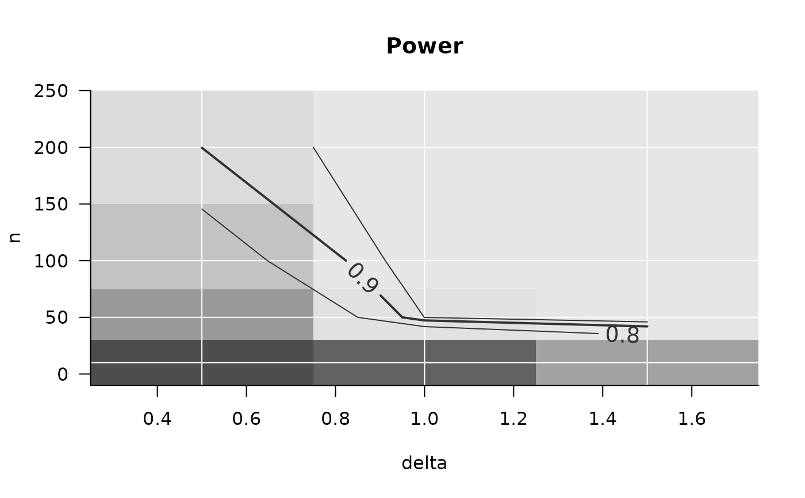
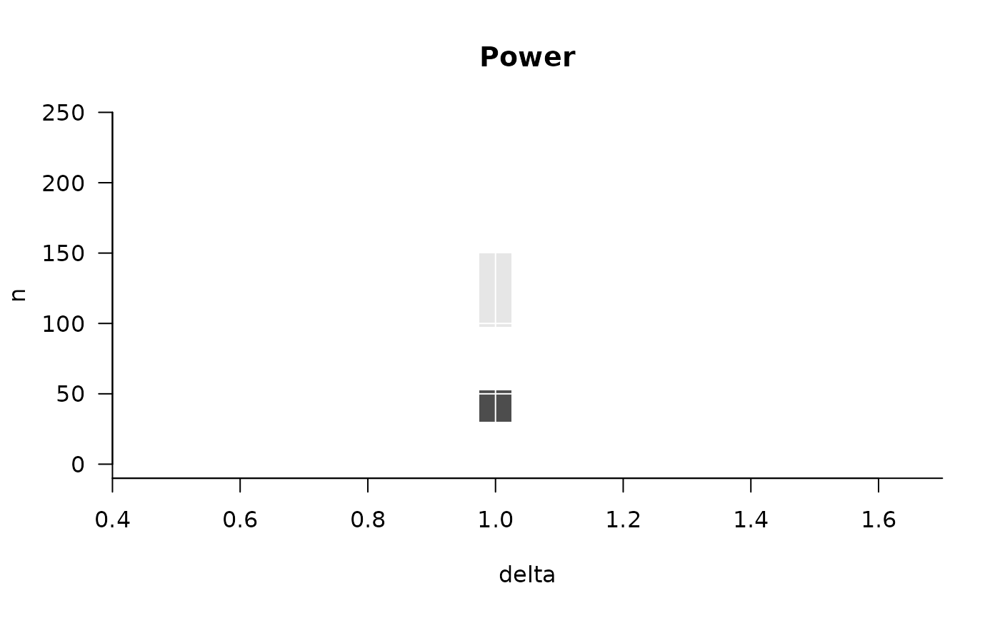

Add further results to an existing power_array (created by
PowerGrid or by another call of Refine), adding further values in
pars and/or larger n_iter.
Details
If pars == NULL, update extends old by adding
iterations n_iter_add to the existing power_array. If pars
is given, the function that was evaluated in old (attribute
sim_function) is evaluated at the crossings of pars. If
argument pars is different from attr(old, which = 'pars'),
this means that the function is evaluated additional crossings of
parameters.
Note that certain combinations of pars and n_iter_add result
in arrays where some crossings of parameters include more iterations than
others. This is a feature, not a bug. May result in less aesthetic
plotting, however.
Examples
## ============================================
## very simple example with one parameter
## ============================================
pars = list(x = 1:2)
fun = function(x){round(x+runif(1, 0, .2), 3)} # nonsense function
set.seed(1)
original = PowerGrid(pars = pars,
fun = fun,
n_iter = 3,
summarize = FALSE)
refined = Refine(original, n_iter_add = 2, pars = list(x = 2:3))
## note that refined does not have each parameter sampled in each simulation
## ============================================
## a realistic example, simply increasing n_iter
## ============================================
PowFun <- function(n, delta){
x1 = rnorm(n = n/2, sd = 1)
x2 = rnorm(n = n/2, mean = delta, sd = 1)
t.test(x1, x2)$p.value < .05
}
sse_pars = list(
n = seq(10, 100, 5),
delta = seq(.5, 1.5, .1))
##
n_iter = 20
set.seed(1)
power_array = PowerGrid(pars = sse_pars,
fun = PowFun,
n_iter = n_iter,
summarize = FALSE)
summary(power_array)
#> Object of class: power_array
#> Containing output of 20 individual iterations.
#> Range of values: [0, 1]
#> Evaluated at:
#> n 10, 15, 20, 25, 30, 35, 40, 45, 50, 55, 60, 65,
#> n 70, 75, 80, 85, 90, 95, 100
#> delta 0.5, 0.6, 0.7, 0.8, 0.9, 1, 1.1, 1.2, 1.3, 1.4,
#> delta 1.5
## add iterations
power_array_up = Refine(power_array, n_iter_add = 30)
summary(power_array_up)
#> Object of class: power_array
#> Containing output of 50 individual iterations.
#> Range of values: [0, 1]
#> Evaluated at:
#> n 10, 15, 20, 25, 30, 35, 40, 45, 50, 55, 60, 65,
#> n 70, 75, 80, 85, 90, 95, 100
#> delta 0.5, 0.6, 0.7, 0.8, 0.9, 1, 1.1, 1.2, 1.3, 1.4,
#> delta 1.5
## ============================================
## Starting coarsely, then zooming in
## ============================================
sse_pars = list(
n = c(10, 50, 100, 200), # finding n "ballpark"
delta = c(.5, 1, 1.5)) # finding delta "ballpark"
n_iter = 60
power_array = PowerGrid(pars = sse_pars,
fun = PowFun,
n_iter = n_iter,
summarize = FALSE)
summary(power_array)
#> Object of class: power_array
#> Containing output of 60 individual iterations.
#> Range of values: [0, 1]
#> Evaluated at:
#> n 10, 50, 100, 200
#> delta 0.5, 1, 1.5
PowerPlot(power_array)
#> Warning: The object 'x' you supplied to PowerPlot
#> contains individual iterations. For sensible
#> plotting, these were automatically summarized
#> across simulations using the function given in
#> argument `summary_function`.

## Based on figure above, let's look at n between 50 and 100, delta around .9
sse_pars = list(
n = seq(50, 100, 5),
delta = seq(.7, 1.1, .05))
set.seed(1)
power_array_up = Refine(power_array, n_iter_add = 555, pars = sse_pars)
summary(power_array_up)
#> Object of class: power_array
#> Containing output of 615 individual iterations.
#> Range of values: [0, 1]
#> Evaluated at:
#> n 10, 50, 55, 60, 65, 70, 75, 80, 85, 90, 95, 100,
#> n 200
#> delta 0.5, 0.7, 0.75, 0.8, 0.85, 0.9, 0.95, 1, 1.05,
#> delta 1.1, 1.5
PowerPlot(power_array_up) # that looks funny! It's because the default summary
#> Warning: The object 'x' you supplied to PowerPlot
#> contains individual iterations. For sensible
#> plotting, these were automatically summarized
#> across simulations using the function given in
#> argument `summary_function`.

# mean does not deal with the empty value in the
# grid. Solution is in illustration below.
## A visual illustration of this zooming in, in three figures
layout(t(1:3))
PowerPlot(power_array, title = 'Course grid to start with')
#> Warning: The object 'x' you supplied to PowerPlot
#> contains individual iterations. For sensible
#> plotting, these were automatically summarized
#> across simulations using the function given in
#> argument `summary_function`.
PowerPlot(power_array_up, summary_function = function(x)mean(x, na.rm = TRUE),
title = 'Extra samples at finer parameter grid (does not look good)')
#> Warning: The object 'x' you supplied to PowerPlot
#> contains individual iterations. For sensible
#> plotting, these were automatically summarized
#> across simulations using the function given in
#> argument `summary_function`.
PowerPlot(power_array_up,
slicer = list(n = seq(50, 100, 5),
delta = seq(.7, 1.1, .05)),
summary_function = function(x)mean(x, na.rm = TRUE),
title = 'Zoomed in')
#> Warning: The object 'x' you supplied to PowerPlot
#> contains individual iterations. For sensible
#> plotting, these were automatically summarized
#> across simulations using the function given in
#> argument `summary_function`.
 layout(1)
layout(1)